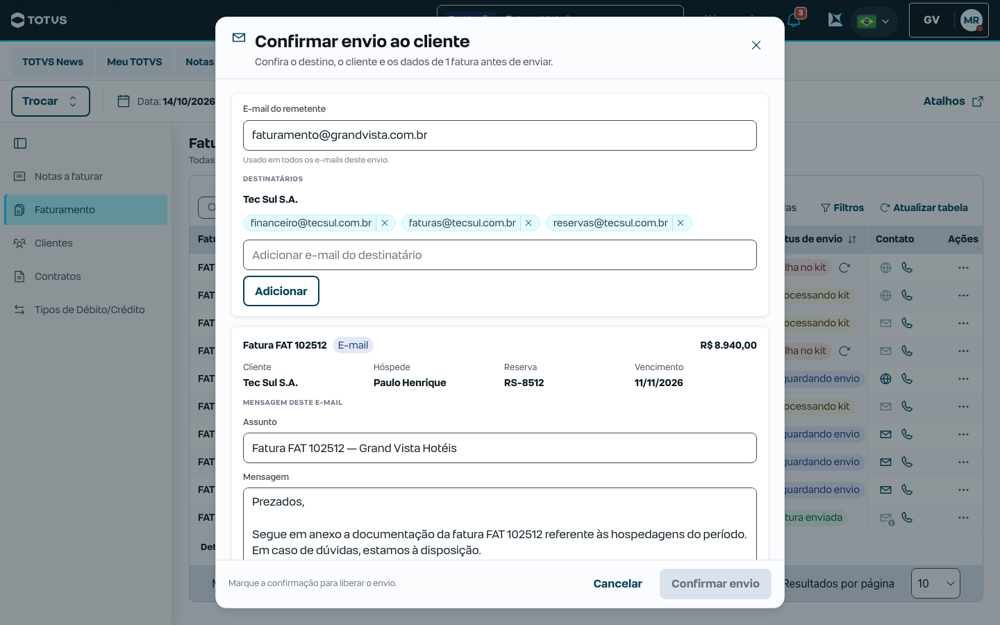
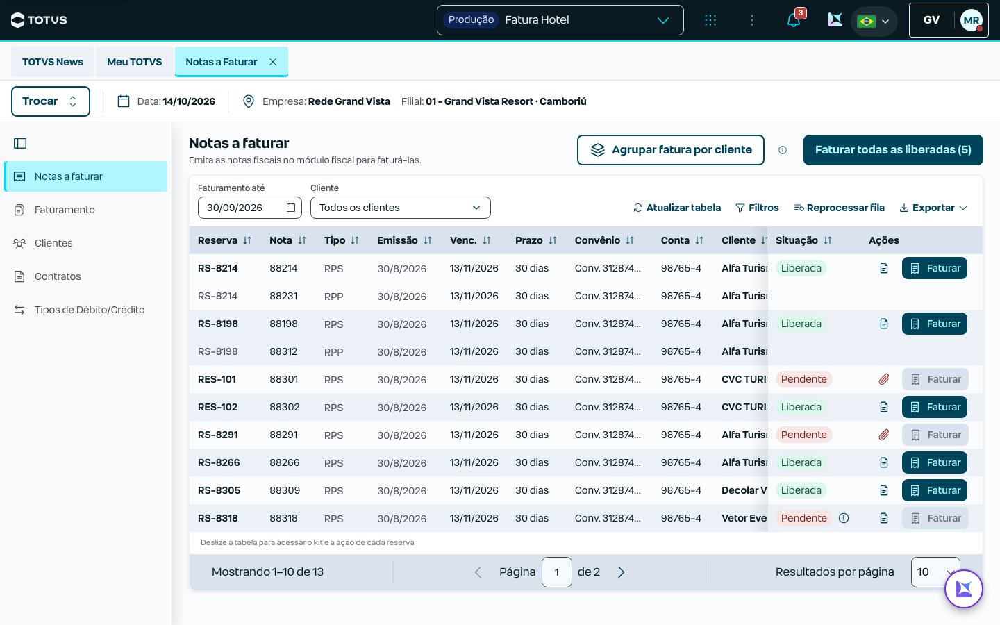

Fatura Hotel: da fatura ao envio, em uma tela só
Um novo módulo de faturamento corporativo para redes hoteleiras, desenhado com o time em três meses de revisões semanais. Fui responsável pela aba Faturamento — onde as faturas são acompanhadas, enviadas e canceladas — e montei o teste de usabilidade com clientes.
Redes hoteleiras faturam clientes corporativos — agências, empresas de eventos, empresas conveniadas — depois de cada estadia. Toda fatura precisa de um kit de documentos (nota fiscal, extrato, voucher) e vai para o cliente por e-mail ou pelo portal de fornecedores do próprio cliente. Centros de serviços compartilhados fazem isso para vários hotéis ao mesmo tempo.
A TOTVS estava reconstruindo esse módulo como Fatura Hotel, um produto SaaS na nova plataforma SmartX. O time: uma PM, três product designers, uma líder de design e o time de desenvolvimento. O módulo foi dividido entre as designers — Notas a faturar, Faturamento e Cancelamento.
Antes de desenhar telas, acompanhamos o time de faturamento de uma rede hoteleira executando o processo atual, numa sessão de sala espelho. O que aprendemos definiu o escopo:
As pessoas conferem cada kit
Mesmo com automação, alguém revisa os documentos antes de a fatura sair — enviar o arquivo errado para o cliente é o risco real.
Uma visão de todos os hotéis
Times que atendem vários hotéis querem uma visão consolidada, em vez de entrar e sair de cada unidade.
E-mail é suficiente
O envio automático por e-mail atende; outros canais, como WhatsApp, agregavam pouco.
Um piloto focado
Automação de arquivos, geração de faturas, registro de boletos e e-mail vieram primeiro; o cancelamento não era essencial para o piloto.
O protótipo começou com duas abas, de faturamento gerado e de gerenciamento de faturas. Conduzi a unificação das duas e os fluxos dentro dela:
01Uma aba, um status
Faturamento gerado e gerenciamento de faturas viraram uma única aba Faturamento, com uma única coluna de status — o status de envio. O trabalho só termina quando a fatura chega ao cliente, então é isso que a tela acompanha. O cancelamento fica no menu de ações.
POR QUÊ → duas listas com colunas repetidas obrigavam o usuário a olhar em dois lugares para saber se a fatura estava resolvida.
02A lista funciona como lista de tarefas
Primeiro vêm as faturas recém-faturadas que ainda precisam ser enviadas, depois as não enviadas de dias anteriores e, por fim, as demais por data. As tags de status dizem o que dá para fazer: “Aguardando envio”, “Processando kit”, “Falha no kit” (com reprocessar), “Enviada” e “Paga” ou “Cancelada”, que bloqueiam o reenvio.
POR QUÊ → a ordem da lista é a ordem do trabalho.

03Envio pelo portal sem fingir
Os portais dos clientes não são integrados no MVP, então o sistema não envia pelo usuário. Transformei o envio em três passos guiados — baixar o kit, anexar no portal do cliente, registrar o envio — e tornei obrigatório o comprovante (print ou e-mail de confirmação) para registrar.
POR QUÊ → garante rastro para auditoria e evita faturas marcadas como enviadas sem envio real.


04Tudo sobre a fatura num painel
Os detalhes da fatura abrem num painel lateral com Resumo, Notas, Documentos do kit e Histórico, sem perder a lista de vista. Enviar ou reenviar é a ação principal, e itens repetidos no menu de ações saíram.
POR QUÊ → menos lugares para procurar, e o próximo passo é sempre o óbvio.


A base visual mudou no caminho: do SmartX para uma versão em Vulpes/Animalia e de volta para o SmartX. Para manter a lógica estável, tratamos fluxos, textos e estados como a fonte da verdade e migramos só a camada visual.
Quando o SmartX não tinha um componente de que precisávamos, documentei as lacunas com prints e descrições para o time da plataforma. E, quando o desenvolvimento começou, design e código andaram em paralelo — testei os fluxos implementados contra o protótipo e reportei as diferenças.
Com o protótipo publicado num link público, criei o formulário de teste de usabilidade para os clientes — cobrindo os fluxos de Faturamento e Clientes — para que os hotéis testassem de forma assíncrona, no seu tempo.

Desenhar o fim do trabalho
Acompanhar o envio, e não só o faturamento, fez a tela refletir como o time mede “pronto”.
Ser honesta sobre o que o sistema faz
Dizer claramente que quem envia pelo portal é o usuário — e pedir comprovante — gera mais confiança do que um “enviado” de mentira.
Proteger a lógica quando a interface muda
Mudanças de plataforma custam menos quando fluxos e estados são acordados antes e o visual vem depois.